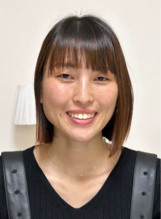
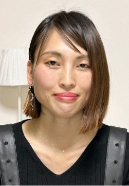
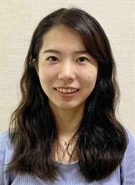
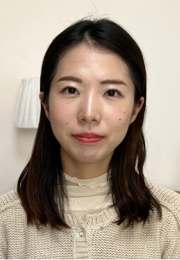

お客様の変化をご紹介！
File.1
パーフェクト診断コース＋メイクアドバイス
M様 30歳

Before
普段メイク

After
レッスン後
パーソナルカラー：ブライトスプリング
骨格：ナチュラル
顔タイプ：クール
Customer's review
①TOMOKOの印象は？
明るくて、話しやすい雰囲気でした。玄関から顔を出された瞬間から優しい親しみやすい雰囲気が出ていました！丁寧で分かりやすかったです。
②サロンの雰囲気は？
清潔感あり、綺麗でおしゃれな空間でした。でもどこかゆったりできる空気があり、リラックスできました！
③診断のご感想
自分のことがよく知れて嬉しいです自己診断ですると、合わないなぁと思っていた服も、トータルで診断して頂いたので、なぜ合わないかがよくわかりました！また私の好きな系統のテイストだったので、自信をもって色んな服に挑戦したいです。服の店名も紹介して頂いて、ありがたいです！！早速いきます。骨格診断、顔タイプ、カラーすべてやってよかったなと思います。またメイクについても、本当にガラッと変わって、楽しかったです。自分に合う色味も分かり、色々試したくなりました。帰りにもうさっそくハイライトとファンデ買い足しました！
④どんな人におすすめ？
自分に何が似合うのかを知りたい人、オシャレになりたい
人、自分の系統に悩みがある人
File.2
パーフェクト診断コース＋メイクアドバイス
T様 22歳

Before
普段メイク

After
レッスンから半年後
パーソナルカラー：ブライトスプリング
骨格：ウェーブ
顔タイプ：ソフトエレガント
TOMOKO's comment
T様は優しく上品な印象で、お顔もお身体も柔らかい質感が魅力でした！
メイクのポイントは上品な印象を生かすために濃くしすぎないこと、しかし手を抜くと子供っぽくなるため化粧感は残しています。中顔面を短縮させるテクニックも利用して小顔に見せました。
カジュアルなスタイルが好みということで、きれいめカジュアルを軸にスタイルアップする着こなしをご提案。
大きな柄や派手な色はお顔が負けてしまうため、得意なカラーを差し色にさりげない華やかさが上品でちょうどいいです♪
ご年齢が若いということもあり、綺麗すぎないナチュラル感が清楚な印象となりお似合いです！
メイクのポイントは上品な印象を生かすために濃くしすぎないこと、しかし手を抜くと子供っぽくなるため化粧感は残しています。中顔面を短縮させるテクニックも利用して小顔に見せました。
カジュアルなスタイルが好みということで、きれいめカジュアルを軸にスタイルアップする着こなしをご提案。
大きな柄や派手な色はお顔が負けてしまうため、得意なカラーを差し色にさりげない華やかさが上品でちょうどいいです♪
ご年齢が若いということもあり、綺麗すぎないナチュラル感が清楚な印象となりお似合いです！
Customer's review
①TOMOKOの印象は？
前回お話ししたことを覚えてくださっていて、嬉しかったです。可愛らしくて柔らかく、優しいお人柄なのに、診断やアドバイスは的確でとてもわかりやすく説明してくださいます。
②サロンの雰囲気は？
白とピンクを基調とした明るく可愛らしい部屋がTOMOKOさんのイメージそのままで、終始優しい雰囲気でした。
③診断のご感想
今までイエベかブルベかすらもわからなかったのですが、12タイプに分かれるさらに細かく、肌に合うカラーを教えていただき、とても勉強になりました。
好きな感じの色（くすみ系や青系）が肌馴染みがあまり良くないとのことでしたが、パーソナルカラーの結果だけでなく、顔タイプ診断の結果をふまえて好きだけど肌馴染み的には苦手な色をどう綺麗に合わせるかアドバイス頂けたのがとても良かったです。
さらに、服とコスメによってパーソナルカラーの結果を優先するか、顔タイプや骨格診断の結果を優先するか、教えていただけたので、好きな色の服を工夫して着ることもできそうですし、特に顔は肌に合った色のコスメを新調したいと思います。
顔タイプや骨格診断、パーソナルカラーは単体でも十分参考になりますが、全て組み合わせることでなりたい雰囲気に近づけると思いました！
好きな感じの色（くすみ系や青系）が肌馴染みがあまり良くないとのことでしたが、パーソナルカラーの結果だけでなく、顔タイプ診断の結果をふまえて好きだけど肌馴染み的には苦手な色をどう綺麗に合わせるかアドバイス頂けたのがとても良かったです。
さらに、服とコスメによってパーソナルカラーの結果を優先するか、顔タイプや骨格診断の結果を優先するか、教えていただけたので、好きな色の服を工夫して着ることもできそうですし、特に顔は肌に合った色のコスメを新調したいと思います。
顔タイプや骨格診断、パーソナルカラーは単体でも十分参考になりますが、全て組み合わせることでなりたい雰囲気に近づけると思いました！
④どんな人におすすめ？
好きな色やなりたい雰囲気があるけど似合ってるかわからない方、どんな雰囲気になりたいかがわからない方にお勧めしたいです！友達にオススメしまくります！
先に公式LINEにご登録
いただくとスムーズです
いただくとスムーズです


予約申請後LINEにお名前をご入力ください
お支払い方法をお送りします
お支払い方法をお送りします

予約開始はストーリーズでお知らせします
サロンの様子なども紹介しています♪
サロンの様子なども紹介しています♪
※ご予約時の注意事項※
◆コースや人数により時間変更をお願いする場合があります。
◆割引をご希望の方は予約申請後に公式LINEでお申し出ください。SNS掲載許可はお顔出しOKの方のみとなります。割引後の金額をお支払いいただきます。必ずお支払い前におっしゃってください！
◆全コース事前支払いをお願いしております。振込手数料はご負担いただきますのでご了承ください。
◆期限内の振込がない場合自動キャンセルとなります。無断でキャンセルされると次回以降ご予約をお取りできなくなる可能性がありますのでご注意ください。直前の無断キャンセルは料金の30%のキャンセル料を請求いたします。
◆予約確定後はキャンセル不可です。ご返金はできませんのでご理解ください。
◆日程変更は体調不良でない限り1回のみとさせていただきます。直前の変更はお控えください。
◆当サロンは現在のところ女性専用となっております。ウェディング診断コースの場合はご新郎様との同席可能です。
◆お子様（未就学児）とご一緒される場合は一度ご相談ください。状況によりお断りさせていただく場合がございます。


メイクのポイントは抜け感のないベースメイクと切れ長な目を生かしたかっこいいアイメイク、チークは濃すぎると子供っぽくなるのでリップで血色を足しました。イエベ春のブライトタイプなので、はっきりとした鮮やかな赤リップが映えますね♪
コーデは肌色を明るく見せるイエベカラーを軸に、シンプルでスタイリッシュ（クール要素）の中に余裕のある着こなし（ナチュラル要素）を取り入れています。ダークカラーを使いすぎると肌が暗くなり、またキツすぎる印象になるため注意です。診断結果に囚われすぎず、総合的な印象アップが最も重要です！